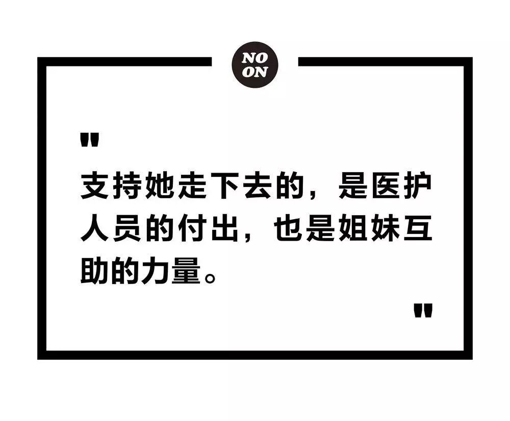
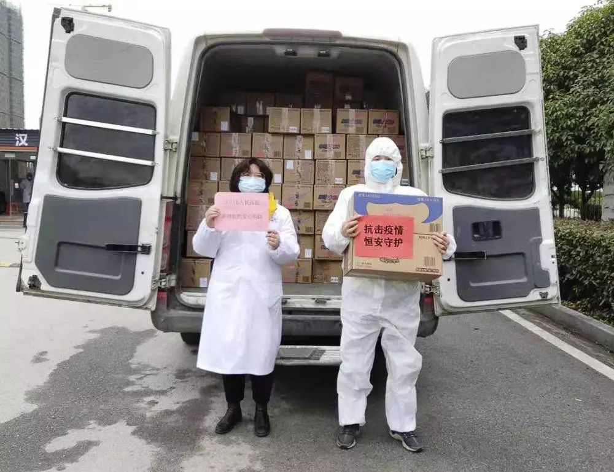

“请把我女朋友踢出志愿者群”
原文链接 备份链接 曹彦/ 华中科技大学新闻与信息传播学院 伍杨的一身“行头”几乎把整个人都吞了。 臃肿的棉袄外套着白色的防护服，戴着皱起来的蓝色防护手套，头顶是一个半旧棒球帽，只露出染过色的齐肩短发，透明护目镜下是两层叠加的口罩。她站在 …
 
姐妹，前线的卫生巾和安心裤还够吗？
文｜潘迪
1
2月6日晚，梁钰刷着微博，看到疫区的医生护士为了节约防护服，数小时都不进食、尽量不去厕所的新闻，一个问题立刻浮现出来：“那她们来了例假怎么办？”而在这次一线的医护人员中，女性占了很大的比例。于是她在微博上问：“前线医护人员的卫生巾和考拉裤还够吗？”
这条微博被转发了两百多次，和很多疫情相关的话题相比，不算多，但是评论区十分踊跃，许多人对她的担忧表示理解，还认真讨论卫生棉条、月经杯、短效避孕药等女性用品在疫区的实用性。
第二天，梁钰在微博上打出了＃姐妹战疫安心行动＃的话题，呼吁网友关注一线女性医护生理期问题。同时，她从卫健委网站查询信息，给湖北的几家医院打电话，询问他们的需求。当时，她只是想和几位朋友一起做点个人捐赠。她们想捐赠安心裤，这一女性用品相当于结合了一次性内裤和卫生巾，比卫生巾使用时长更久，考拉裤是其中的一种。
但事态的发展很快超出梁钰的预期。2月7日当天，就有不止一家品牌向她寻求合作，各地的医护人员也发来私信。有黄冈某定点医院的医生为160名出不了隔离区的女医护求助，“和领导申请了也一直没落实”；有人代支援方舱医院的朋友求安心裤，还问梁钰能否帮忙代买秋衣秋裤短袖，“她们出门连换洗衣服都没来得及带，要光膀子了。”
需要联系和咨询的人太多，2月7日到11日，梁钰共睡了11小时，醒着的时间都在与一线医护、医院领导和各类有意向的企业沟通，“至少上百人吧，”她估计。捐赠的进展也快得超乎她想象，从2月7日白天到9日夜里，梁钰和朋友共牵头定点捐赠超过71万元的物资、超过11万条安心裤，覆盖了武汉、黄冈、孝感的20家医院。
开始募捐后，梁钰才发现疫区女性用品的缺口有多大。
“我同事今天血跟尿都混在一起了，太难了。”
这是她2月11日晚间收到的一条微博私信，一位江汉方舱医院海南志愿队的护士替两位来例假的同事急求安心裤。2月12日凌晨，梁钰终于找到了一个武汉志愿者笛子，当时小区已经封了，禁止出入，笛子一早翻墙出了小区，跑了整整半天，才找到物资，买了送去方舱医院。
梁钰今年24岁，个人微博@梁钰stacey有约27万关注者。过去几年，她在微博上常参与讨论各类性别议题，言语爽利地与持男权观点的网民辩论交锋，时时对性别歧视的言论给予迎头痛击。疫情发生后，她也数次带着＃看见女性劳动者＃的话题转发一线女性医护的新闻，呼吁媒体对“男女战士”给予“同等的尊重和报道”。
“我觉得这是很自然的事情，男的不也是关注他们的权利？”梁钰在电话里对我说。这时是晚上11点，她刚和志愿者团队开完会，讨论了优化流程的问题，声音沙哑。但她精力不错，语速很快，“小时候接受过教育自然而然就知道，我是应该受到保护的，但是这个社会好像跟法律规定的不大一样。不过好像男性无所谓，没有人会去侵犯他们的权益，就让我觉得很困惑。”梁钰说。
＃姐妹战疫安心行动＃的关注度越来越大，质疑也随之而来：有人觉得女性健康用品不是疫区最急缺的物资，要先考虑国家大事；有人直指她的动机不纯；还有人说她在网上呼吁太折腾，建议不如她自己打钱，让一线医护自己到超市采购。
在微博上，梁钰流露过几次情绪激烈的时刻。一次是2月9日，她主动向金银潭医院提出捐赠，对方表示“我们其实急缺专业防护用品，这个不急的”，两天后，她却收到了该院一线女医护的求助，同时得知金银潭有约1300名女性医护人员。另外一次是一位求助的医生回复她“卫生巾（需求）翻三倍吧，我们从来不发呢”。她无法理解为什么女性的需求会被如此漠视。“拜托你们看见女性劳动者吧！”梁钰在微博喊话，文字里透出愤怒。
但采访时，梁钰语调平静地告诉我，大部分时候，她没有精力注意这些。一个为一线医护志愿做心理咨询的朋友对梁钰说，自己接到一位才刚入职就被派到前线的年轻女孩的咨询，本来应该开解女孩，但是咨询师自己听了也很崩溃。梁钰和朋友互相开解说：“对比一下，我们只是在家里敲键盘，我们也要努力一点，自己忍一忍，调整一下就过去了。”
不过，一天晚上， 没时间睡觉的梁钰实在压力太大，照着网上一个大学的心理咨询中心电话打过去，哭了一小时。“（7号）就觉得已经不行了，真的没有怎么睡觉，信息是过载的，还要处理表格。但我自己还没有理清情况，没有及时招人。”梁钰对我说。哭完，挂下电话，她觉得又可以继续战斗了。
到2月10日，梁钰终于不堪重负，决定招募搭建志愿者团队。
2月11日，恒安集团通过“姐妹战疫安心行动”向湖北省汉川市人民医院捐赠女性用品。
 2月12日，梁钰个人捐赠60条安心裤、36条一次性内裤送达江汉方舱医院海南医疗队。
2月12日，梁钰个人捐赠60条安心裤、36条一次性内裤送达江汉方舱医院海南医疗队。
2
小勇是“安心行动”最早的志愿者之一。2月7日下午，她刷到了梁钰呼吁关注孝感的微博时，当时，孝感已经成为武汉之外疫情最严重的城市。尽管小勇人在东北，但是她想到有三个朋友在孝感，自己一直十分担忧他们，于是她给梁钰发去私信，表示自己可以帮忙协调孝感的运输，以及与医院沟通。
通过在孝感做公务员的师弟介绍，小勇进了一个由孝感各医院一线医护组成的微信群，询问、整理她们的需求，发给梁钰，由梁钰联络捐赠和物流。一两天里，她看着孝感下属各县级市的医护也陆续进来，群人数从三四十噌噌涨到了近一百。她一共整理统计了三次孝感女医护的物资需求，2月7日当天统计的第一批有发热门诊的8家定点医院里，在岗女性医护就有5900人，上报的需求是共29500条安心裤，平均每人只有5条，一天换两条，也不够用三天。
“很多医院的人都不好意思要，有的医院有700多女性在岗医护，说‘捐500（条安心裤）就行’。”小勇说。
2月10日，梁钰在微博发出招募志愿者的信息后，私信蜂拥而至，她说，她的微博上有上万条未读信息，只能“看缘分”点开，她也是模糊地意识到，要找有社工背景的、做媒体的、学统计的、搞管理的。当天，志愿者团队按照功能分成了找货组、募捐组、对接组、信息组、物流组、媒体组、宣传组。到2月14日，这个团队共有46位志愿者。
正在读研的Doris因为疫情推迟开学，在2月10日这天刷到了梁钰的微博，觉得蛮有意义，就进了“安心行动”对接组。当夜，她的个人微信二维码同其他五名志愿者一起被放到了宣传组制作的募捐进度公示图中。11日早上七点到晚上十点，Doris几乎没离开过书桌，对接媒体、个人和团体捐赠、医护求助、车队志愿者等超过100人，到睡觉时已是12日早上四点多了。
Doris之前有过做公益志愿者的经验，介绍她的工作职责时言简意赅，思路清晰。她说，对接组的工作重点是询问、接收、核实湖北省各地市医院对女性健康用品的需求。每天，Doris和近十位志愿者一起制作、更新一张详尽的表格（囊括了医院地址、医护数目、对接人信息、安心裤尺码等信息），经过核实，再与捐赠方的物资进行对接匹配。
梁钰说，捐赠进行了几天之后，她们不再需要主动去征询、收集信息，到2月12日，通过微博私信或对接组微信联系团队求助的就有超过140家医院的医护。Doris记得，两天里，光是华中科技大学同济医院就来求助过三次。
信息组则负责与对接组、物流组、募捐组核实信息，录入表格，每晚再一起统计核算当日收到捐赠、与院方对接情况、善款使用情况等，交由宣传组制图。每天早上八点开始，9位志愿者实行轮班制，志愿者团队建立五天后，信息组录入了近200家医院的信息。
志愿者小刘每天12点到16点负责整理、录入随时更新的医院需求、物资信息，同时配合提取其他组需要的数据，她不好意思地在电话里表示，这项工作不困难，只是自己和表格打交道不是很熟练，“可能会耽搁一点儿工作效率。”
工作时，小刘常常一边录入信息，一边忍不住想，“怎么可能缺口这么大？怎么能让孕妇去前线？”她打开一张表格念给我听，“xx县人民医院50位孕妇，xx县人民医院81位孕妇。”2月12日起，她在医院报过来的需求中看到了安心包等孕妇用品，但在已对接的捐赠物品中，她发现针对孕妇的物资还是相对欠缺。
“缺口大到超出想象。”梁钰也几次感慨。2月9日，“安心行动”给武汉协和医院西院送了300箱、共28800条安心裤，到13日已全部用完，团队收到二次求助后，又派发了第二批7200条安心裤、24000条一次性内裤。梁钰去问一线医生，医生说，第一批捐赠她们优先给了隔离病房的病人。“好吧，我们只能再想办法凑，还能怎么办？”梁钰说。
2月11日晚，梁钰的团队与灵山基金会合作发起的公募在新浪微公益和为爱联合劝募两个平台上线，募捐额为2,265,055元。有人质疑说，公募额为什么这么大？梁钰在微博列出了武汉几大著名医院和孝感市各医院女性医护的人数：
“整个孝感市，女性医护人员，约1.66万
武汉同济，女性医护人员，远超5000
武汉协和总院，女性医护人员，约5700
武汉金银潭，女性医护人员，约1300
武汉汉口医院，女性医护人员，约600
同济医院中法院院区，女性医护人员，约1000
…… ……”
上述仅孝感和武汉两个城市的部分医院就有超过3万名女性医护，保守估算每人每月使用两条安心裤，按照采购合作方全棉时代一包（两条）安心裤6.94元的价格，要花费20.95万元。而还有大量的需求来自10家方舱医院、雷神山、火神山，以及湖北其他12个地市自治州的医院。
在这些医院里，梁钰觉得，最艰难的还是方舱。方舱医院是临时建立，医护人员来自各家医院，很多甚至来自外省，她们从接到调动通知到出发间隔时间很短，到了方舱医院之后，也不可能出来购买卫生巾或安心裤。而且，方舱不是独立行政机构，没有统一的官方可以进行捐赠对接。
“我们这边统计，有的方舱说不需要（安心裤）……好多医疗队进驻，比如说协和知道自己（的支援队）需要这些，但是不知道整个方舱需要多少。”Doris说。对于“安心行动”来说，这仍然是一个难以解决的问题。
3
在对接组统计需求的时候，找货组也已经开始联系物资。
2月7日开始，陆续有捐赠方找到梁钰。高洁丝、全棉时代、ABC、洁婷、恒安集团等品牌方都通过“安心行动”捐赠了安心裤或卫生巾。
“我相当于一个开源，”梁钰说，通常是她先和品牌方谈，再分派给找货组对接。有部分商家提出要求，希望被捐赠方用指定手机型号、在指定角度拍视频，视频里必须拉横幅、喊很长的口号。“这直接把受捐方惹毛了。我们也觉得很过分，与其这样，就不合作了。”她在接受凤凰网公益频道采访时表示。
很多热心人也有捐赠的想法。他们之中，有的希望通过“安心行动”捐赠，有的希望亲自捐赠。2月11日，Doris的大部分时间都花在了和大约30位个人捐赠者的对接上，“有的人就想问你一个医院的地址，但是给了你这个地址我们就要负责任，需要监督各个环节：物资的质量、物流的问题、到没到医院。”
一天下来，Doris总结了她遇到的“经典桥段”：有人过来要了医院地址，没一会儿来反馈说，这个网店不给“三证”，那个网店不发货了，再折腾半天，发现顺丰也停了。捐赠者一次次地问她：怎么办？她也没办法。个人捐赠小额物资很不容易实施。“比如说我这儿有一堆卫生巾，我觉得它是安全的，但是要转到第二、三方，就需要一个证明，这个证明拿不出来怎么办？这就需要我们用比较好的话术表达，既不会伤及到大家的爱心，又能比较高效地完成事情。”Doris说。
2月12日下午，确认顺丰和中国邮政都不运输非医疗物资后，团队关闭了个人捐赠物资的通道。
随着“安心行动”影响力扩大，一线医护传递的需求猛增，品牌方的主动捐助已经不够了，找货组承受的压力也随之加大。
志愿者阿布今年30岁，有数年互联网行业工作经验，他主动提出担任找货组负责人，“想多承担一点。”他说。他很热心，进团队一天后，就和梁钰聊自己对于“安心行动”优化组织分工的建议。采访结束后，他也把关于“安心行动”的其他报道发给我，“信息作参考。”他简要说明。
2月10日以来，找货组的三位志愿者共交涉了约20家厂商，愿意捐赠的就交由对接组对接资源，想提供采购的就继续聊。阿布总结，第一个难点是确定可供货的厂家，摸清品类；其次是和对方沟通，尽量把价格谈低点儿，“当然我们不会特别纠结，一般其实一块多或者几毛一条，很便宜了，谈了其实也就是压一两分而已”；再次，就是和其他组一同协调匹配厂商、捐赠方、院方的需求。
阿布从前在武汉读书时参与过环保机构的公益活动，之前就关注了梁钰的微博。他的嫂子是护士，看到梁钰谈到一线女性医护缺乏健康物品时，阿布深感赞同，“我自己不是什么主义者，但我会以比较平常的状态去关注，护士绝大多数是女性，她们日常需要的（健康用品）显然是非常非常多的。但凡对这个事儿有正确认识的人都会重视，说大点儿这是作为现代公民的一个基础常识。”阿布说。
4
除了缺货，最大的问题就是缺钱。“需求量太大了， 湖北企业现在开工的话要付3倍工资，其实对他们也是挺大的负担，直接让他们提供那么多是不现实的。”小勇说。对接了孝感医护人员的需求之后，她成为募捐组的负责人。
募捐不是件容易的事。2月7日，梁钰和几个朋友有了发起募捐的想法，她们咨询了有饭圈应援经验的粉丝，发现那套募捐规则只适用于后援会和粉丝站，根据《慈善法》，她们要挂靠有公募资质的基金会才能获得合法性。怎么才能找到基金会呢？梁钰问了很多人。
2月9日，梁钰问到小勇：能搞到钱吗？小勇想了想回：可以。她在硕士师门群里发出求基金会资源的信息，所有人都被动员起来。最后她成功对接三家机构，从中选择了灵山基金会作为合作方。“大的基金会审批流程都会有一点慢，他们也有一些风险上的担心，我们选择的标准就是要最快。”
灵山基金会是一个研究慈善法的校友帮忙对接的，这位校友还帮他们详细论证了“安心行动”发起、执行公募的合法性。这时距梁钰问她“搞钱”还没过去24小时。
2月10日夜里，刚建立不久的募捐组五人开始赶立项书。小勇是社工专业出身，其他组员分别有财会、新闻、公益机构背景，但都是第一次写公募项目立项书。小勇以每半小时为节点给组员更新任务，大家一点点核算预算覆盖人数，谨慎措辞，避免风险。11日中午，立项书完成，小勇又和基金会敲定捐赠上线的流程细节，一边和组员沟通接受个人、团体捐款的工作流程。
2月11日白天，灵山基金会审批立项通过，当日19点52分，公募链接通过新浪微公益和为爱联合劝募两个平台上线。这时，“安心行动”已和全棉时代谈下了合作，她们的第一批公募所得捐款将全部用于采购全棉时代的安心裤。
小勇担心这么大的募捐额无法完成，但是灵山基金会的工作人员安慰她，募不到就进度慢一些，和全棉时代分批签限量采购协议就好。2月11日晚，小勇又和微公益的工作人员对接，后者给“安心行动”爱心募捐提供了流量曝光。
出乎所有人的意料，募捐的速度很快。一个晚上过去，到2月12日早上9:12，实际捐款已达到2,355,051.96元，超出了募捐额度。
募捐通道关闭后，募捐组和找货组又开始推进和全棉时代的采购合同。13日下午，“安心行动”已完成了第一批公募采购，花费2,031,485元购入20万条安心裤、300,926条一次性内裤。次日的公示表明：善款余额中10万元为运输预算，5万元为应急预算，剩余173,566.96元将全部用于采购物资。
到2月13日，小勇才真正放下心。过去几天工作强度太大，回忆一些时间点时她常常沉默片刻，带着歉意感慨，“哇，我的天，等会儿我看看，怎么这个也忘了。”采访后的工作间隙，她又发来微信，“梁钰让我找钱的时候我告诉她，放心……实际上我内心是很忐忑很怀疑的。”“我忐忑了特别久，就怕别人不重视。募捐的时候也在害怕，募不到怎么办。”“原来我真能做到。”
在疫情来临之前，小勇辞了职打算考博，结果由于疫情，不能考试也不能找工作，每天刷微博疫情信息，焦虑异常，感觉都有点替代性心理创伤了。“做这个项目，也是实现了对自己的治愈吧。”
公募下线后，募捐组负责继续对接企业和团体的捐赠。小勇和组员们在试图简化物品捐赠的流程，也在整理风控条例，列清需要规避的法律风险。“每个工作者都要在疫情中参与进来，发挥自己的能力，才能真实地抚平自己的创伤。”小勇说。
5
“安心行动”的每一个环节都不容易，但是自始至终，最难解决的就是物流。自1月23日武汉和湖北其他地市陆续封城后，航运停了，陆运受到严格管控；没有疾控指挥部授予的通行证，私家车和普通大型车不能出武汉本市，外省的物资也无法运进湖北——而女性健康用品并未被归为可以得到特殊待遇的医用物资。
2月10日，谢女士在微博热门里看到了梁钰的倡议。她今年48岁，是某省航空物流公司负责人，正好因为小区封闭休假在家，加入志愿者团队后成为物流组负责人。
物流组一共13人，在对接组将物资与医院信息匹配、信息组录入信息后，开始组织运输工作。其中有三四个成员将信息转化成派单，跟踪物流状况，其他组员则来自物流协会和武汉当地的志愿者车队。
2月11日，15家粉丝应援站组成的“666联盟”通过武汉武商超市采购了666箱安心裤捐给同济医院，武商无法运输。谢女士通过上海中通的老总，联系上了湖北省中通的一位陈经理，后者在谢女士将“666联盟”物资信息发出后一小时，就派人到货源地拉上了货；并爽快答应，全程为“安心行动”在湖北省内免费提供运力。
在疫区捐赠中，物流一直是最困难的环节之一。但谢女士和我通话时语气一直蛮淡定，“我们遇到问题就解决问题，”她语速较缓，态度从容。
“现在武汉市区内的运输我个人还是有信心的。”谢女士说。她和组员测算过，一辆私家车可以装约20件安心裤，于是组内商定，100件以上的物资由中通车队支援，100件以下的小额捐赠由志愿者出车，物流组派单后，由志愿者车队负责人到车队群里匹配车辆。谢女士担心100件的量对于私家车太大，但车队负责人保证说，没问题，“一趟跑不完跑两趟，两趟跑不完跑三趟。”
谢女士安排了一个组员专门负责追踪发往武汉市以外的派件，在物资派发前，这位组员要和当地医院、疾控中心联系，掌握当日的交通信息。谢女士给我展示了一张表格，是物流组整理的湖北各市防疫中心/防控指挥部交通组的联系方式。12日晚接受采访前，谢女士收到反馈，武汉送到黄冈某医院的一单货在没有通行证的情况下，全程畅通无阻，“但物流信息是每天都在变，你知道吧？没有人知道这个事明天会咋样。异地运输可能情况会比你想象得要复杂得多。”
2月11、12日两天，物流组帮助完成了数批厂商和公益组织捐赠物资的运输。
第一批公募结束后，物流组的工作强度才迎来高峰。2月13日晚，通过中通，“安心行动”运了250箱安心裤到协和西院。14日，3万多片安心裤抵达协和总院。第一批全棉时代的物资还将运往黄梅县人民医院、黄冈市妇幼保健院、浠水县中医院。
2月12日晚，谢女士曾通过个人关系与顺丰商议合作，但没有成功。“中通的力量政府也在征用，不确定能剩余多少力量给我们，所以现在也蛮麻烦的。”谢女士补充，安心裤、卫生巾体积比同等重量的货物要大30%-40%，很考验运力。她也让朋友帮忙找其他物流公司，但其他公司不像中通是全国直营，执行力没那么强。
另一个难题是，湖北省内的安心裤、卫生巾库存有限。阿布介绍说，他联络的大部分货源都来自福建、江西、北京、重庆等地。因此谢女士预估，物流组未来工作最大的挑战还是尤其省外货源的运输。
厂家自行运输，需要搞到通行证，还要找到愿意送物资到武汉、返程后自行隔离14天的司机，难度很大。中通承诺，可以为她们派车到省际高速收费站对接省外货源，解决外省车辆无法入鄂的问题。不过这样一来，卸货、装货的过程会带来繁重的工作量。“很麻烦。”谢女士说，“所以我们还没（这么）操作，但是我估计后期可能得用这种方式来对接了。”
 2月15日，“姐妹战疫安心行动”将85箱共6120条安心裤送达武汉市中心医院后湖院区。
2月15日，“姐妹战疫安心行动”将85箱共6120条安心裤送达武汉市中心医院后湖院区。
 2月15日，“姐妹战疫安心行动”将170箱共12240条安心裤送达武汉市第一医院。
2月15日，“姐妹战疫安心行动”将170箱共12240条安心裤送达武汉市第一医院。
6
截至2月15日24点，梁钰和她的志愿者团队共计协调9个品牌、3个团体、10人次个人捐赠，捐赠安心裤186,840条、卫生巾2880片、一次性内裤3156条、护手霜700支，配送至武汉、黄冈、孝感、鄂州等地共35家医院。
尽管有这么大的量，但是梁钰告诉我，“安心行动”目前收到的捐赠物资加上第一批公募所得能购买的物资总量，只能满足目前收到的一线医护需求的约十分之一。她呼吁说，民间力量有限，女性健康用品应被列入相关部门统一采购的疫区物资。
2月14日，全国妇联所属的中国妇女发展基金会宣布，紧急募集款项，向一线女性医务人员支援安心裤、卫生巾等女性用品。浙江妇联也发起了关爱一线女性医务工作者的公益行动。
“安心行动”也和其他几个为一线女性医护募捐健康用品的志愿者组织达成了共识，共享医院与物资名单，“比如我们这里物资不够的时候，也会分享给其他的组织，看他们能不能帮忙捐赠。”
梁钰希望“安心行动”能获得更大的影响力，从而可以更高效地帮助更多的一线女性医护。但与此同时，梁钰也担心影响力扩大可能带来的风险。尽管她向研究法律的朋友求证过“安心行动”的合法性，可是一直无法安心。
“我们内心当然是希望做下去的，但我们如果想做下去，肯定是需要主流声音的支持，那我们可能就更有动力和能力去做这个事情。如果主流不接受我们，我们可能就会结束。我们还是需要走一步看一步。”梁钰说。
2月13日晚，梁钰在她的微博上呼吁：
“这一次的疫情女性医护人员充分体现了我国职业女性的高素养，完全不存在刻版印象中的体力不够，无法吃苦，无法出差，无法加班，矫情。大过年从全国各地支援武汉的是她们，穿上防护服不吃不喝几小时月经期没有足够卫生用品也笑笑说没事的是她们……希望在疫情时，能够给予她们应得的保障；希望疫情结束后，她们平安回来时，她们能够得到应有的真金白银升职加薪，拥有更广阔的职业天地，她们值得；也希望此次女战士们已经足够证明了女性职业者的素养，请接下来高校以及单位招生招聘时，以同样录取标准对待每一个人。”
2月14日夜里，一位方舱医院的医护感谢她：“起码现在有你们的号召，没有人再顶着带血的防护服走了。”
7
从2月7日到现在，所有参与“安心行动”的人都在超负荷工作。媒体组负责人Sappho告诉我，进群几天，大家没有自我介绍、互相都不知道身份，直接开启朝十朝二模式，偶尔互相打气，没有聊过闲天。“过得没日没夜的，啥也不知道了。”小勇形容，飙出了东北口音。
在采访中，梁钰说：“我们的工作是做不完的，大家每天都到非常晚，我们觉得这样下去不行。”
高密度的工作状态下，阿布感觉四天像是过了一个月。2月13日的晚间会议上，梁钰她们谈到了轮班的计划，“考虑到未来持久性的问题，希望很多人复工以后能以半兼职的状态让团队运转起来。”“大多数人都比较年轻，其实应对这种突发和大规模信息集中处理的经验是比较少的。”2月14晚，梁钰在个人微博又发布了志愿者团队招新信息，为对接组、信息组、媒体组扩充人手。
支持梁钰走下去的，是医护人员的付出，也是女性之间互相守望与支持的情谊。2月15日，她在微博上讲了志愿者笛子的故事。笛子就是那个翻墙出去给海南医疗队找安心裤的武汉女孩。梁钰形容说，“她很生猛”。她们在对话中，互称对方“姐妹”。当笛子跑了50公里给上海华山医院医疗队送了物资之后，梁钰说，姐妹，你太不容易了，我们上海人民感谢你。梁钰又说，你爸妈同意你乱跑啊，50公里啊姐妹，都可以从上海去苏州了！笛子说，嘿，姐妹，我可是我妈带着我一起送的。
梁钰说：“我总教育她，姐妹，你这个保护工作要做好阿，不要搞这么危险，你这样可不行，你不能这样做一个抱薪者阿，不要这么疯！”
笛子却说：“我们就是普通人，时光荏苒，从不曾离开，就像每一个今天，守护这座城。”
最后，梁钰写道：“其实我们这些人，彼此之间谁也不认识，谁又不是叫了声姐妹，彼此守护着彼此，守护着这个国家呢。”
—— 完 ——
题图为2月15日，“姐妹战疫安心行动”将85箱共6120条安心裤送达武汉市中心医院后湖院区。本文图片均由“姐妹战疫安心行动”团队提供。
《正午7》已上市，点击阅读原文可购买

点击标题再读点儿别的
辞职后，我上了武当山 ｜ 舞剧《永不消逝的电波》是如何诞生的？ ｜ 6年不租房，从住办公室到四海为家 | 流浪到鹤岗，我五万块买了套房 ｜ 谁都有可能是家暴受害者 ｜ 家暴、死囚和一部法律的诞生 | 柴小雨FIRST征战记
四步设置星标，每天正午看正午


原文链接 备份链接 曹彦/ 华中科技大学新闻与信息传播学院 伍杨的一身“行头”几乎把整个人都吞了。 臃肿的棉袄外套着白色的防护服，戴着皱起来的蓝色防护手套，头顶是一个半旧棒球帽，只露出染过色的齐肩短发，透明护目镜下是两层叠加的口罩。她站在 …
原文链接 备份链接 向风暴眼输送防护物资并非易事武汉市中心医院医生发布微博求助，希望社会各界捐物资。图源：微博截图 2月12日晚，武汉中心医院的一位医生在微博发出求助。 这位身穿防护服的医生对镜头说，医用N95没有了，只能戴工业口罩，医 …
原文链接 备份链接 医院人员领取志愿者送的医疗物资。受访者供图 文 | 李晓芳 编辑 | 胡大旗 新型冠状病毒肺炎疫情扩大后，湖北省内的医院医疗物资告急。从1月23日开始，很多医院自行发布物资募捐公告。几乎同一时间，各种民间力量行动起来， …
原文链接 备份链接 数据来源：腾讯新冠肺炎疫情实时追踪 截至2月3日早上7时， 全国新冠肺炎确诊个案16615例， 武汉确诊个案5142例。 根据1月31日湖北省疫情新闻发布会， 截至30日24时， 武汉地区共有6万余名医务工作者参与救 …
原文链接 备份链接 关注并星标消费新声 不错过泛消费任何最新动态 从这个物资对接平台的建立、运作中，我们看到互助的力量。 作者 | 赵烨楠 编辑 | 罗立璇 1月24日，中国春节的大年三十、武汉“封城”的第二天。 在大量患者涌向医院的情况 …